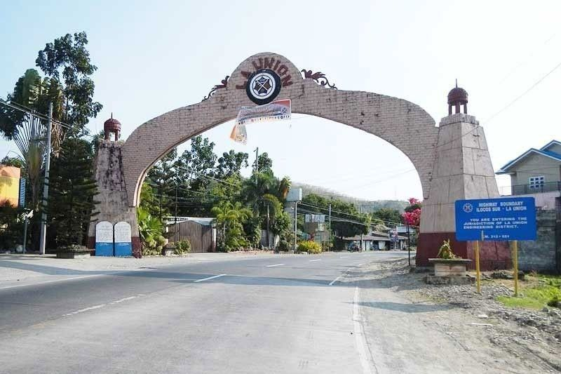

La Union the land of beaches and culture. La Union is a province located in Luzon and is a popular destination for local and foreign visitors. Commonly called as "Elyu" by local visitors, the province is known to be a getaway from the city life as it is near Manila.
La Union boasts tourists spots that keeps visitors from leaving. Here is a list of tourist spots to visit!